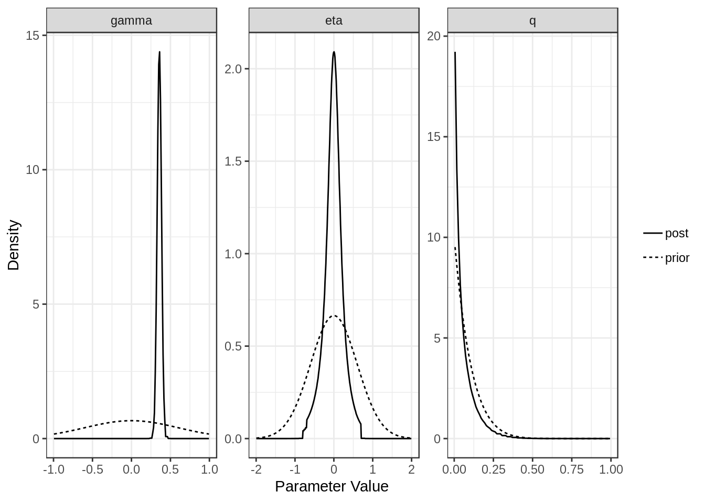
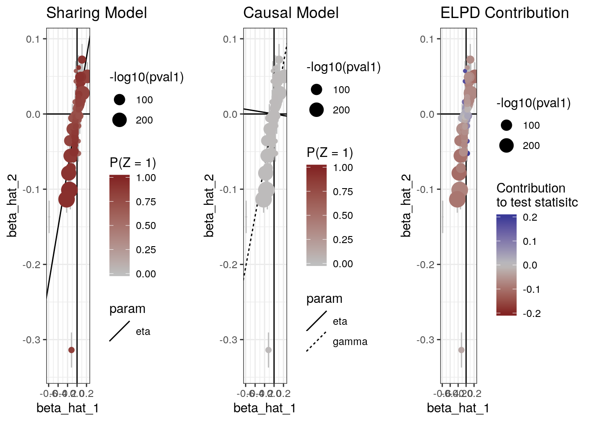

Example Analysis with CAUSE: LDL -> CAD
Jean Morrison
2018-10-16
Last updated: 2019-06-25
workflowr checks: (Click a bullet for more information)-
✔ R Markdown file: up-to-date
Great! Since the R Markdown file has been committed to the Git repository, you know the exact version of the code that produced these results.
-
✔ Environment: empty
Great job! The global environment was empty. Objects defined in the global environment can affect the analysis in your R Markdown file in unknown ways. For reproduciblity it’s best to always run the code in an empty environment.
-
✔ Seed:
set.seed(20181014)The command
set.seed(20181014)was run prior to running the code in the R Markdown file. Setting a seed ensures that any results that rely on randomness, e.g. subsampling or permutations, are reproducible. -
✔ Session information: recorded
Great job! Recording the operating system, R version, and package versions is critical for reproducibility.
-
Great! You are using Git for version control. Tracking code development and connecting the code version to the results is critical for reproducibility. The version displayed above was the version of the Git repository at the time these results were generated.✔ Repository version: a55827d
Note that you need to be careful to ensure that all relevant files for the analysis have been committed to Git prior to generating the results (you can usewflow_publishorwflow_git_commit). workflowr only checks the R Markdown file, but you know if there are other scripts or data files that it depends on. Below is the status of the Git repository when the results were generated:
Note that any generated files, e.g. HTML, png, CSS, etc., are not included in this status report because it is ok for generated content to have uncommitted changes.Ignored files: Ignored: .Rhistory Ignored: .Rproj.user/ Ignored: analysis/figure/ Untracked files: Untracked: analysis/ldl_cad_cache/ Untracked: example_data/CAD_META.gz Untracked: example_data/genome_wide_pruned_vars.1.RDS Untracked: example_data/glg_ldl__vanderHarst_cad_cause.RDS Untracked: example_data/glg_ldl__vanderHarst_cad_data.RDS Untracked: example_data/glg_ldl__vanderHarst_cad_grid.RDS Untracked: example_data/jointGwasMc_LDL.txt.gz Untracked: example_data/ld_data.tar.gz Untracked: example_data/ld_data/ Untracked: example_data/ldl_cad_cause.RDS Untracked: example_data/ldl_cad_cause.old_grid.RDS Untracked: example_data/ldl_cad_params.RDS Untracked: example_data/snp_overlap.txt Untracked: example_data/snp_overlap_ldpruned.txt Untracked: example_data/top_ldl_pruned_vars.1.RDS Untracked: ll_v7_notes.Rmd Untracked: matrix_lik.RDS Untracked: quantile_sampling.R Untracked: simulations/ Untracked: src/RcppExports.o Untracked: src/log_likelihood_functions.o Untracked: test_data/
Expand here to see past versions:
| File | Version | Author | Date | Message |
|---|---|---|---|---|
| Rmd | a55827d | Jean Morrison | 2019-06-25 | wflow_publish(files = c(“analysis/index.Rmd”, “analysis/ldl_cad.Rmd”)) |
| html | d8d1486 | Jean Morrison | 2019-06-25 | Build site. |
| Rmd | e0a6df4 | Jean Morrison | 2019-06-25 | wflow_publish(files = c(“analysis/ldl_cad.Rmd”)) |
| html | 33b3732 | Jean Morrison | 2019-06-25 | Build site. |
| Rmd | 0e35268 | Jean Morrison | 2019-06-25 | wflow_publish(files = c(“analysis/ldl_cad.Rmd”)) |
| html | 286f4e9 | Jean Morrison | 2019-06-25 | Build site. |
| Rmd | 8f3b82e | Jean Morrison | 2019-06-25 | wflow_publish(files = c(“analysis/about.Rmd”, “analysis/index.Rmd”, “analysis/ldl_cad.Rmd”, “analysis/license.Rmd”, |
| html | 4a8f76c | Jean Morrison | 2018-11-06 | Build site. |
| Rmd | 2652be1 | Jean Morrison | 2018-11-06 | wflow_publish(“analysis/ldl_cad.Rmd”) |
| html | 6ae7a60 | Jean Morrison | 2018-10-24 | build website |
| Rmd | 48bdf21 | Jean Morrison | 2018-10-24 | fixing warnings |
| Rmd | 8c57c8a | Jean Morrison | 2018-10-24 | build website |
| html | 8c57c8a | Jean Morrison | 2018-10-24 | build website |
| Rmd | a34393d | Jean Morrison | 2018-10-24 | build website |
| html | a34393d | Jean Morrison | 2018-10-24 | build website |
| html | 6354c35 | Jean Morrison | 2018-10-22 | Build site. |
| html | bbe4901 | Jean Morrison | 2018-10-17 | Build site. |
| Rmd | 558cd32 | Jean Morrison | 2018-10-17 | wflow_publish(“analysis/ldl_cad.Rmd”) |
| html | 73690eb | Jean Morrison | 2018-10-17 | Build site. |
| Rmd | 1a891e3 | Jean Morrison | 2018-10-17 | wflow_publish(“analysis/ldl_cad.Rmd”) |
| Rmd | d10191f | Jean Morrison | 2018-10-17 | wflow_git_commit(“analysis/ldl_cad.Rmd”) |
Introduction
This document will walk through a real genome-sized example of how to use CAUSE. Some of the steps will take 5-10 minutes. The LD pruning steps will benefit from access to a cluster or multiple cores. For steps that require long computation we also provide output files that can be downloaded to make it easier to run through the example.
We will be analyzing GWAS data for LDL cholesterol and for coronary artery disease to test for a causal relationship of LDL on CAD. The analysis will have the following steps:
- Format the data for use with CAUSE
- Calculate nuisance parameters
- LD pruning
- Fit CAUSE
- Look at results
Step 3 will require LD information estimated from the 1000 Genomes CEU population using LDshrink here. LD data are about 11 Gb. The GWAS data we will use are about 320 Gb. However, in this tutorial you will be able to skip the large data steps and simply download the results.
Step 0: Install CAUSE
In R
devtools::install_github("jean997/cause")Please be sure you are using mixsqp-0-97 which is currently the version available in CRAN *not the latest version available on GitHub.
Step 1: Format Data for CAUSE
We will use read_tsv to read in summary statistics for a GWAS of LDL cholesterol and a GWAS of coronary artery disease from the internet. We will then combine these and format them for use with CAUSE. First read in the data. For LDL Cholesterol, we use summary statistics from Willer et al (2013) [PMID: 24097068]. For CAD we use summary statistics from van der Harst et al. (2017) [PMID: 29212778]
library(readr)
library(dplyr)
Attaching package: 'dplyr'The following objects are masked from 'package:stats':
filter, lagThe following objects are masked from 'package:base':
intersect, setdiff, setequal, unionlibrary(cause)X1 <- read_tsv("http://csg.sph.umich.edu/abecasis/public/lipids2013/jointGwasMc_LDL.txt.gz")
X2 <- read_tsv("ftp://ftp.ebi.ac.uk/pub/databases/gwas/summary_statistics/vanderHarstP_29212778_GCST005194/CAD_META.gz")CAUSE needs the following information from each data set: SNP or variant ID, effect size, and standard error, effect allele and other allele. For convenience, we provide a simple function that will merge data sets and produce a cause_data object that can be used with later functions. This step and the rest of the analysis are done in R.
The function gwas_format_cause will try to merge two data sets and and align effect sizes to correspond to the same allele. It will remove variants with ambiguous alleles (G/C or A/T) or with alleles that do not match between data sets (e.g A/G in one data set and A/C in the other). It will not remove variants that are simply strand flipped between the two data sets (e. g. A/C in one data set, T/G in the other).
LDL column headers:
- SNP: rsid
- Effect: beta
- Standard Error: se
- Effect Allele: A1
- Other Allele: A2
CAD column headers:
- SNP: oldID
- Effect: Effect
- Standard Error: StdErr
- Effect Allele: Allele1
- Other Allele: Allele2
X <- gwas_format_cause(X1, X2, snp_name_cols = c("rsid", "oldID"),
beta_hat_cols = c("beta", "Effect"),
se_cols = c("se", "StdErr"),
A1_cols = c("A1", "Allele1"),
A2_cols = c("A2", "Allele2"))
head(X)Alternatively, you can download already formatted data here and read it in using readRDS.
X <- readRDS("example_data/LDL_CAD_merged.RDS")There are likely more efficient ways to do this merge. If you would like to process the data yourself, you can construct a cause_data object from a data frame using the constructor new_cause_data(X) where X is any data frame that includes the columns snp, beta_hat_1, seb1, beta_hat_2, and seb2.
Step 2: Calculate nuisance parameters
The next step is to estimate the parameters that define the prior distribution of \(\beta_{M}\) and \(\theta\) and to estimate \(\rho\), the correlation between summary statistics that is due to sample overlap or population structure. We will do this with a random subset of 1,000,000 variants since our data set is large. est_cause_params estimates the nuisance parameters by finding the maximum a posteriori estimate of \(\rho\) and the mixing parameters when \(\gamma = \eta = 0\). This step takes a several minutes.
set.seed(100)
varlist <- with(X, sample(snp, size=1000000, replace=FALSE))
params <- est_cause_params(X, varlist)Estimating CAUSE parameters with 1000000 variants.
1 0.1530926
2 0.0006548855
3 8.291495e-06
4 1.06693e-07
5 5.555824e-10 The object params is of class cause_params and contains information about the fit as well as the maximum a posteriori estimates of the mixing parameters (\(\pi\)) and \(\rho\). The object params$mix_grid is a data frame defining the distribution of summary statistics. The column S1 is the variance for trait 1 (\(M\)), the column S2 is the variance for trait 2 (\(Y\)) and the column pi is the mixture proportion assigned to that variance combination.
class(params)[1] "cause_params"names(params) [1] "rho" "pi" "mix_grid" "loglik" "PIS"
[6] "RHO" "LLS" "converged" "prior" "var" params$rho[1] 0.06465867head(params$mix_grid) S1 S2 pi
1 0.000000000 0.000000000 0.349613038
2 0.000000000 0.003408693 0.156938837
3 0.003257738 0.003408693 0.002752562
4 0.000000000 0.004820620 0.176297684
5 0.003257738 0.004820620 0.143141741
6 0.004607137 0.006817386 0.049773176So, for example, in this case, we have estimated that 35% of variants have trait 1 variance and trait 2 equal to 0 meaning that they have no association with either trait.
Tip: Do not try to estimate the nuisance parameters with substantially fewer than 100,000 variants. This can lead to poor estimates of the mixing parameters whih leads to bad model comparisons.
Step 3: LD Pruning
We estimate CAUSE posterior distributions using an LD pruned set of variants, prioritizing variants with low trait \(M\) (LDL) \(p\)-values. The CAUSE R package contains a function to help do this. The function ld_prune uses a greedy algorithm that selects the variant wtih the lowest LDL p-value and removes all variants in LD with the selected variant and then repeats until no variants are left. This step requires LD estimates. You can download estimates made in the 1000 Genomes CEU population here. We first demonstrate use of the function for one chromosome and then show an example of how to parallelize the analysis over all 22 autosomes.
ld <- readRDS("example_data/ld_data/chr22_AF0.05_0.1.RDS")
snp_info <- readRDS("example_data/ld_data/chr22_AF0.05_snpdata.RDS")
head(ld) rowsnp colsnp r2
1 rs62224609 rs376238049 0.9012642
2 rs62224609 rs62224614 0.9907366
3 rs62224609 rs7286962 0.9907366
4 rs62224609 rs55926024 0.1103000
5 rs62224609 rs117246541 0.9012642
6 rs62224609 rs62224618 0.9907366head(snp_info)# A tibble: 6 x 9
AF SNP allele chr pos snp_id region_id map ld_snp_id
<dbl> <chr> <chr> <int> <int> <int> <int> <dbl> <int>
1 0.884 rs62224609 T,C 22 16051249 7.98e7 22 0 79758556
2 0.904 rs4965031 G,A 22 16052080 7.98e7 22 0 79758578
3 0.646 rs3756846… A,AAAAC 22 16052167 7.98e7 22 0 79758584
4 0.894 rs3762380… C,T 22 16052962 7.98e7 22 0 79758602
5 0.934 rs2007775… C,A 22 16052986 7.98e7 22 0 79758604
6 0.934 rs80167676 A,T 22 16053444 7.98e7 22 0 79758627The ld data frame should contain the column names rowsnp, colsnp, and r2. The snp_info data frame contains information about all of the chromosome 22 variants with allele frequency greater than 0.05. The only piece of information we need from this data frame is the list of variants snp_info$SNP which provides the total list of variants used in the LD calculations.
LD pruning for one chromosome
The ld_prune function is somewhat flexible in its arguments, see help(ld_prune).
variants <- X %>% mutate(pval1 = 2*pnorm(abs(beta_hat_1/seb1), lower.tail=FALSE))
pruned <- ld_prune(variants = variants,
ld = ld, total_ld_variants = snp_info$SNP,
pval_cols = c("pval1"),
pval_thresh = c(1e-3))You have suppplied information for 2023362 variants.
Of these, 22835 have LD information.length(pruned)[1] 15ld_prune retunrs a list of vectors of length equal to the length of the pval_cols argument. In this case pval_cols= c(NA, "pval1") meaning that the first element of pruned will be a randomly pruned list and the second will be pruned preferentially choosing variants with low values of pval1. We also apply a threshold specified by the pval_thresh argument. For the first list there is no threshold. For the second, the threshold is 0.001.
Parallelizing over chromosomes
We highly recommend parallelizing for whole genome LD pruning. One way to do this is with the parallel pacakge, though this option uses a lot of memory.
library(parallel)
cores <- parallel::detectCores()-1
ld_files <- paste0("example_data/ld_data/chr", 1:22, "_AF0.05_0.1.RDS")
snp_info_files <- paste0("example_data/ld_data/chr", 1:22, "_AF0.05_snpdata.RDS")
cl <- makeCluster(cores, type="PSOCK")
clusterExport(cl, varlist=c("variants", "ld_files", "snp_info_files"))
clusterEvalQ(cl, library(cause))
system.time(
pruned <- parLapply(cl, seq_along(ld_files[20:22]), fun=function(i){
ld <- readRDS(ld_files[i])
snp_info <- readRDS(snp_info_files[i])
ld_prune(variants = variants,
ld = ld, total_ld_variants = snp_info$SNP,
pval_cols = c("pval1"),
pval_thresh = c( 1e-3))
})
)
stopCluster(cl)
top_ldl_pruned_vars <- unlist(pruned)A better option is to parallelize over the nodes of a compute cluster and then combine results.
Tip: If you are analyzing many phenotypes first obtain a list of variants present in all data sets and then LD prune this list. You can use this single set of variants estimate nuisance parameters for every pair as long as there are enough of them.
Download the resulting variant list: top LDL list
Step 4: Fit CAUSE
Now that we have formatted data, an LD pruned set of variants, and nuisance parameters estimated, we can fit CAUSE! The function cause::cause will estimate posterior distributions under the confounding and causal models and calculate the elpd for both models as well as for the null model in which there is neither a causal or a confounding effect. This might take 5-10 minutes.
Note: To estimate the posterior distributions, we only need the variants that are most associated with the mediator. This is because other variants don’t add any information about the relationship between the traits. When we LD pruned, we used a \(p\)-value threshold of 0.001. The exact value of this threshold isn’t important as long as it is fairly lenient. Including additional variants may slow down computation but shouldn’t change the results
top_vars <- readRDS("example_data/top_ldl_pruned_vars.RDS")
res <- cause(X=X, variants = top_vars, param_ests = params)Estimating CAUSE posteriors using 1215 variants.Step 5: Look at Results
The resulting cause object contains an object for the partial sharing model fit (conf), and object for the causal model fit (full) and a table of ELPD results.
class(res)[1] "cause"names(res)[1] "conf" "full" "elpd" "loos" "data" "sigma_g" "qalpha"
[8] "qbeta" res$elpd model1 model2 delta_elpd se_delta_elpd z
1 null conf -62.005377 7.783698 -7.966056
2 null full -70.272030 8.940126 -7.860295
3 conf full -8.266653 1.242831 -6.651469class(res$conf)[1] "cause_post"class(res$full)[1] "cause_post"The elpd table has the following columns:
- model1, model2: The models being compared
- delta_elpd: Estimated difference in elpd. If delta_elpd is negative, model 2 is a better fit
- se_delta_elpd: Estimated standard error of delta_elpd
- z: delta_elpd/se_delta_elpd. A z-score that can be compared to a normal distribution to test if the difference in model fit is significant.
In this case we see that the full (causal) model is significantly better than the confounding model from the thrid line of the table. The \(z\)-score is -6.65 corresponding to a p-value of 1.510^{-11}.
For each model (partial sharing and full) we can plot the posterior distributions of the parameters. Dotted lines show the prior distributions.
plot(res$conf)
Expand here to see past versions of plot1-1.png:
| Version | Author | Date |
|---|---|---|
| d8d1486 | Jean Morrison | 2019-06-25 |
| 33b3732 | Jean Morrison | 2019-06-25 |
| 286f4e9 | Jean Morrison | 2019-06-25 |
| 4a8f76c | Jean Morrison | 2018-11-06 |
| a34393d | Jean Morrison | 2018-10-24 |
| bbe4901 | Jean Morrison | 2018-10-17 |
| 73690eb | Jean Morrison | 2018-10-17 |
plot(res$full)
Expand here to see past versions of plot1-2.png:
| Version | Author | Date |
|---|---|---|
| d8d1486 | Jean Morrison | 2019-06-25 |
| 33b3732 | Jean Morrison | 2019-06-25 |
| 286f4e9 | Jean Morrison | 2019-06-25 |
| 4a8f76c | Jean Morrison | 2018-11-06 |
| a34393d | Jean Morrison | 2018-10-24 |
| bbe4901 | Jean Morrison | 2018-10-17 |
| 73690eb | Jean Morrison | 2018-10-17 |
The summary method will summarize the posterior medians and credible intervals.
summary(res, ci_size=0.95)p-value testing that causal model is a better fit: 1.5e-11
Posterior medians and 95 % credible intervals:
model gamma eta
[1,] "Confounding Only" NA "0.38 (0.31, 0.45)"
[2,] "Causal" "0.34 (0.28, 0.4)" "-0.01 (-0.65, 0.53)"
q
[1,] "0.78 (0.64, 0.88)"
[2,] "0.03 (0, 0.25)" The plot method applied to a cause object will arrange all of this information on one spread.
plot(res)
Expand here to see past versions of plot2-1.png:
| Version | Author | Date |
|---|---|---|
| d8d1486 | Jean Morrison | 2019-06-25 |
| 33b3732 | Jean Morrison | 2019-06-25 |
| 286f4e9 | Jean Morrison | 2019-06-25 |
| 4a8f76c | Jean Morrison | 2018-11-06 |
| a34393d | Jean Morrison | 2018-10-24 |
| bbe4901 | Jean Morrison | 2018-10-17 |
| 73690eb | Jean Morrison | 2018-10-17 |
The plot method can also produce scatter plots of the data showing for each model, the probability that each variant is acting through the confounder and the contribution of each variant to the ELPD test statistic.
plot(res, type="data")
Session information
sessionInfo()R version 3.5.2 (2018-12-20)
Platform: x86_64-pc-linux-gnu (64-bit)
Running under: Ubuntu 18.04.2 LTS
Matrix products: default
BLAS: /usr/lib/x86_64-linux-gnu/openblas/libblas.so.3
LAPACK: /usr/lib/x86_64-linux-gnu/libopenblasp-r0.2.20.so
locale:
[1] LC_CTYPE=en_US.UTF-8 LC_NUMERIC=C
[3] LC_TIME=en_US.UTF-8 LC_COLLATE=en_US.UTF-8
[5] LC_MONETARY=en_US.UTF-8 LC_MESSAGES=en_US.UTF-8
[7] LC_PAPER=en_US.UTF-8 LC_NAME=C
[9] LC_ADDRESS=C LC_TELEPHONE=C
[11] LC_MEASUREMENT=en_US.UTF-8 LC_IDENTIFICATION=C
attached base packages:
[1] stats graphics grDevices utils datasets methods base
other attached packages:
[1] bindrcpp_0.2.2 cause_0.2.0.0097 dplyr_0.7.6 readr_1.1.1
loaded via a namespace (and not attached):
[1] tidyselect_0.2.4 ashr_2.2-32 purrr_0.2.5
[4] lattice_0.20-35 colorspace_1.3-2 htmltools_0.3.6
[7] loo_2.0.0 yaml_2.2.0 utf8_1.1.4
[10] rlang_0.3.1 R.oo_1.22.0 mixsqp_0.1-97
[13] pillar_1.3.1 glue_1.3.1 R.utils_2.7.0
[16] matrixStats_0.54.0 foreach_1.4.4 bindr_0.1.1
[19] plyr_1.8.4 stringr_1.3.1 munsell_0.5.0
[22] gtable_0.2.0 workflowr_1.1.1 R.methodsS3_1.7.1
[25] codetools_0.2-15 evaluate_0.11 labeling_0.3
[28] knitr_1.20 doParallel_1.0.14 pscl_1.5.2
[31] parallel_3.5.2 fansi_0.4.0 Rcpp_1.0.0
[34] backports_1.1.2 scales_1.0.0 RcppParallel_4.4.1
[37] truncnorm_1.0-8 gridExtra_2.3 ggplot2_3.1.0
[40] hms_0.4.2 digest_0.6.18 stringi_1.2.4
[43] numDeriv_2016.8-1 grid_3.5.2 rprojroot_1.3-2
[46] cli_1.0.1 tools_3.5.2 magrittr_1.5
[49] lazyeval_0.2.1 tibble_2.0.0 crayon_1.3.4
[52] whisker_0.3-2 tidyr_0.8.1 pkgconfig_2.0.2
[55] MASS_7.3-50 Matrix_1.2-14 SQUAREM_2017.10-1
[58] assertthat_0.2.1 rmarkdown_1.10 iterators_1.0.10
[61] R6_2.4.0 intervals_0.15.1 git2r_0.25.2
[64] compiler_3.5.2 This reproducible R Markdown analysis was created with workflowr 1.1.1